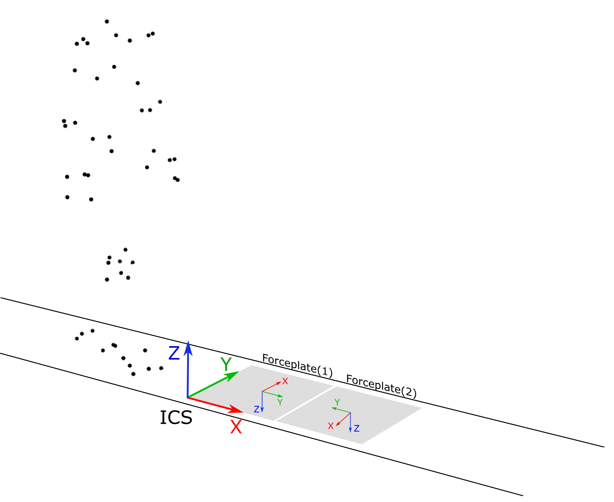

Heel and force
How far does a planted heel move while the floor pushes back? Watch the skin markers from one barefoot walk and read the force recorded under the right foot at the same moment.
The measured step
Right plate load
N
Upward component of force under the foot. Each reading averages 15 plate samples around one camera frame.
Right heel position
- Along walkway · X
- Across walkway · Y
- Up · Z
Force under the right foot
The lighter band covers the 100 ms after the cutoff. The vertical cursor follows the scene. Each trace uses the same force scale.
The next 100 milliseconds
The heel starts at zero on each axis here. The three lines show its measured displacement from that point, in millimetres.
At the target frame
Inspect the numbers
Indices start at zero in the cropped recording. Frame 1 in the physical C3D file is index 0 here. Times refer to the archived recording. The chart and scene display successive camera frames 10 ms apart.
| Index | Time (s) | Heel X (mm) | Heel Y (mm) | Heel Z (mm) | Plate 1 up (N) |
|---|
Download frame coordinates and loads (CSV) · All 52 marker tracks, plate corners and individual force samples (JS)
Where the markers and plates were placed

Researchers at Rehazenter in Luxembourg collected this slow barefoot walk, trial 2014001_C2_01. The metronome set a target speed of 0.4–0.8 m/s. The three intervals overlap during one right-foot stance.
The yellow ring marks the back of the right heel (R_FCC). The orange square marks the head of the second metatarsal (R_FM2), on the ball of the foot. Trails follow their past positions. Lines connect nearby skin markers so you can follow the limbs. Skin surfaces, joint centres and pressure beneath individual parts of the foot were not measured here.
The floor corners come from the same recording. Plate 1 measures 510 × 464 mm and plate 2 measures 508 × 464 mm. Their corners lie at laboratory Z = −2 mm. Supplementary Table 2 assigns the right foot to plate 1 and the left to plate 2 for this walk (code 12). The right foot strikes at 0.05 s and leaves at 1.32 s. At all three targets, the heel and forefoot project inside plate 1.
In these axes X follows the row of plates, Y crosses it and Z points up. The source plate’s local Z points down. Negating its scaled Fz1 channel reproduces the upward laboratory reading. A zero in the processed force record can include a reading below the source threshold or a missing value.
The source authors filled marker gaps and filtered signals in both time directions. The original mask of reconstructed points is unavailable. They report calibration residuals below 2 mm across sessions, but give no error bound for these particular heel changes. The replay cannot establish how soon a live system could detect them, or how much force one muscle produced.
Dataset v8 · Marker placement and methods · Study and supplement · Authors’ processing code